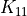

flopy.mf6.modflow.mfgwflak Module¶
-
class
flopy.mf6.modflow.mfgwflak.ModflowGwflak(model, add_to_package_list=True, auxiliary=None, boundnames=None, print_input=None, print_stage=None, print_flows=None, save_flows=None, stage_filerecord=None, budget_filerecord=None, ts_filerecord=None, obs_filerecord=None, mover=None, surfdep=None, time_conversion=None, length_conversion=None, nlakes=None, noutlets=None, ntables=None, lakrecarray_package=None, lakrecarray=None, lake_tablesrecarray=None, outletsrecarray=None, lakeperiodrecarray=None, rate=None, outletperiodrecarray=None, fname=None, pname=None, parent_file=None)¶ ModflowGwflak defines a lak package within a gwf6 model.
Parameters: auxiliary : [string]
- auxiliary (string) defines an array of one or more auxiliary variable names. There is no limit on the number of auxiliary variables that can be provided on this line; however, lists of information provided in subsequent blocks must have a column of data for each auxiliary variable name defined here. The number of auxiliary variables detected on this line determines the value for naux. Comments cannot be provided anywhere on this line as they will be interpreted as auxiliary variable names. Auxiliary variables may not be used by the package, but they will be available for use by other parts of the program. The program will terminate with an error if auxiliary variables are specified on more than one line in the options block.
boundnames : boolean
- boundnames (boolean) keyword to indicate that boundary names may be provided with the list of lake cells.
print_input : boolean
- print_input (boolean) keyword to indicate that the list of lake information will be written to the listing file immediately after it is read.
print_stage : boolean
- print_stage (boolean) keyword to indicate that the list of lake stages will be printed to the listing file for every stress period in which “HEAD PRINT” is specified in Output Control. If there is no Output Control option and PRINT_STAGE is specified, then stages are printed for the last time step of each stress period.
print_flows : boolean
- print_flows (boolean) keyword to indicate that the list of lake flow rates will be printed to the listing file for every stress period time step in which “BUDGET PRINT” is specified in Output Control. If there is no Output Control option and “PRINT_FLOWS” is specified, then flow rates are printed for the last time step of each stress period.
save_flows : boolean
- save_flows (boolean) keyword to indicate that lake flow terms will be written to the file specified with “BUDGET FILEOUT” in Output Control.
stage_filerecord : [stagefile]
- stagefile (string) name of the binary output file to write stage information.
budget_filerecord : [budgetfile]
- budgetfile (string) name of the binary output file to write budget information.
ts_filerecord : [ts6_filename]
- ts6_filename (string) defines a time-series file defining time series that can be used to assign time-varying values. See the “Time- Variable Input” section for instructions on using the time-series capability.
obs_filerecord : [obs6_filename]
- obs6_filename (string) name of input file to define observations for the LAK package. See the “Observation utility” section for instructions for preparing observation input files. Table reftable:obstype lists observation type(s) supported by the LAK package.
mover : boolean
- mover (boolean) keyword to indicate that this instance of the LAK Package can be used with the Water Mover (MVR) Package. When the MOVER option is specified, additional memory is allocated within the package to store the available, provided, and received water.
surfdep : double
- surfdep (double) real value that defines the surface depression depth for VERTICAL lake-GWF connections. If specified, SURFDEP must be greater than or equal to zero. If SURFDEP is not specified, a default value of zero is used for all vertical lake-GWF connections.
time_conversion : double
- time_conversion (double) value that is used in converting outlet flow terms that use Manning’s equation or gravitational acceleration to consistent time units. TIME_CONVERSION should be set to 1.0, 60.0, 3,600.0, 86,400.0, and 31,557,600.0 when using time units (TIME_UNITS) of seconds, minutes, hours, days, or years in the simulation, respectively. CONVTIME does not need to be specified if no lake outlets are specified or TIME_UNITS are seconds.
length_conversion : double
- length_conversion (double) real value that is used in converting outlet flow terms that use Manning’s equation or gravitational acceleration to consistent length units. LENGTH_CONVERSION should be set to 3.28081, 1.0, and 100.0 when using length units (LENGTH_UNITS) of feet, meters, or centimeters in the simulation, respectively. LENGTH_CONVERSION does not need to be specified if no lake outlets are specified or LENGTH_UNITS are meters.
nlakes : integer
- nlakes (integer) value specifying the number of lakes that will be simulated for all stress periods.
noutlets : integer
- noutlets (integer) value specifying the number of outlets that will be simulated for all stress periods. If NOUTLETS is not specified, a default value of zero is used.
ntables : integer
- ntables (integer) value specifying the number of lakes tables that will be used to define the lake stage, volume relation, and surface area. If NTABLES is not specified, a default value of zero is used.
lakrecarray_package : [lakeno, strt, nlakeconn, aux, boundname]
- lakeno (integer) integer value that defines the lake number associated with the specified PACKAGEDATA data on the line. LAKENO must be greater than zero and less than or equal to NLAKES. Lake information must be specified for every lake or the program will terminate with an error. The program will also terminate with an error if information for a lake is specified more than once.
- strt (double) real value that defines the starting stage for the lake.
- nlakeconn (integer) integer value that defines the number of GWF cells connected to this (LAKENO) lake. There can only be one vertical lake connection to each GWF cell. NLAKECONN must be greater than zero.
- aux (double) represents the values of the auxiliary variables for each lake. The values of auxiliary variables must be present for each lake. The values must be specified in the order of the auxiliary variables specified in the OPTIONS block. If the package supports time series and the Options block includes a TIMESERIESFILE entry (see the “Time-Variable Input” section), values can be obtained from a time series by entering the time-series name in place of a numeric value.
- boundname (string) name of the lake cell. BOUNDNAME is an ASCII character variable that can contain as many as 40 characters. If BOUNDNAME contains spaces in it, then the entire name must be enclosed within single quotes.
lakrecarray : [lakeno, iconn, cellid, claktype, bedleak, belev, telev,
- connlen, connwidth]
- lakeno (integer) integer value that defines the lake number associated with the specified CONNECTIONDATA data on the line. LAKENO must be greater than zero and less than or equal to NLAKES. Lake connection information must be specified for every lake connection to the GWF model (NLAKECONN) or the program will terminate with an error. The program will also terminate with an error if connection information for a lake connection to the GWF model is specified more than once.
- iconn (integer) integer value that defines the GWF connection number for this lake connection entry. ICONN must be greater than zero and less than or equal to NLAKECONN for lake LAKENO.
- cellid ((integer, …)) is the cell identifier, and depends on the type of grid that is used for the simulation. For a structured grid that uses the DIS input file, CELLID is the layer, row, and column. For a grid that uses the DISV input file, CELLID is the layer and CELL2D number. If the model uses the unstructured discretization (DISU) input file, CELLID is the node number for the cell.
- claktype (string) character string that defines the lake-GWF connection type for the lake connection. Possible lake-GWF connection type strings include: VERTICAL–character keyword to indicate the lake-GWF connection is vertical and connection conductance calculations use the hydraulic conductivity corresponding to the tensor component defined for CELLID in the NPF package. HORIZONTAL–character keyword to indicate the lake-GWF connection is horizontal and connection conductance calculations use the hydraulic conductivity corresponding to the  tensor component defined for CELLID in the NPF package. EMBEDDEDH–character keyword to indicate the lake-GWF connection is embedded in a single cell and connection conductance calculations use the hydraulic conductivity corresponding to the tensor component defined for CELLID in the NPF package. EMBEDDEDV–character keyword to indicate the lake-GWF connection is embedded in a single cell and connection conductance calculations use the hydraulic conductivity corresponding to the tensor component defined for CELLID in the NPF package. Embedded lakes can only be connected to a single cell (NLAKCONN = 1) and there must be a lake table associated with each embedded lake.
- bedleak (double) character string or real value that defines the bed leakance for the lake-GWF connection. BEDLEAK must be greater than or equal to zero or specified to be NONE. If BEDLEAK is specified to be NONE, the lake-GWF connection conductance is solely a function of aquifer properties in the connected GWF cell and lakebed sediments are assumed to be absent.
- belev (double) real value that defines the bottom elevation for a HORIZONTAL lake-GWF connection. Any value can be specified if CLAKTYPE is VERTICAL, EMBEDDEDH, or EMBEDDEDV. If CLAKTYPE is HORIZONTAL and BELEV is not equal to TELEV, BELEV must be greater than or equal to the bottom of the GWF cell CELLID. If BELEV is equal to TELEV, BELEV is reset to the bottom of the GWF cell CELLID.
- telev (double) real value that defines the top elevation for a HORIZONTAL lake-GWF connection. Any value can be specified if CLAKTYPE is VERTICAL, EMBEDDEDH, or EMBEDDEDV. If CLAKTYPE is HORIZONTAL and TELEV is not equal to BELEV, TELEV must be less than or equal to the top of the GWF cell CELLID. If TELEV is equal to BELEV, TELEV is reset to the top of the GWF cell CELLID.
- connlen (double) real value that defines the distance between the connected GWF CELLID node and the lake for a HORIZONTAL, EMBEDDEDH, or EMBEDDEDV lake-GWF connection. CONLENN must be greater than zero for a HORIZONTAL, EMBEDDEDH, or EMBEDDEDV lake-GWF connection. Any value can be specified if CLAKTYPE is VERTICAL.
- connwidth (double) real value that defines the connection face width for a HORIZONTAL lake-GWF connection. CONNWIDTH must be greater than zero for a HORIZONTAL lake-GWF connection. Any value can be specified if CLAKTYPE is VERTICAL, EMBEDDEDH, or EMBEDDEDV.
lake_tablesrecarray : [lakeno, tab6_filename]
- lakeno (integer) integer value that defines the lake number associated with the specified TABLES data on the line. LAKENO must be greater than zero and less than or equal to NLAKES. The program will terminate with an error if table information for a lake is specified more than once or the number of specified tables is less than NTABLES.
- tab6_filename (string) character string that defines the path and filename for the file containing lake table data for the lake connection. The CTABNAME file includes the number of entries in the file and the relation between stage, surface area, and volume for each entry in the file. Lake table files for EMBEDDEDH and EMBEDDEDV lake-GWF connections also include lake-GWF exchange area data for each entry in the file. Input instructions for the CTABNAME file is included at the LAK package lake table file input instructions section.
outletsrecarray : [outletno, lakein, lakeout, couttype, invert, width,
- rough, slope]
- outletno (integer) integer value that defines the outlet number associated with the specified OUTLETS data on the line. OUTLETNO must be greater than zero and less than or equal to NOUTLETS. Outlet information must be specified for every outlet or the program will terminate with an error. The program will also terminate with an error if information for a outlet is specified more than once.
- lakein (integer) integer value that defines the lake number that outlet is connected to. LAKEIN must be greater than zero and less than or equal to NLAKES.
- lakeout (integer) integer value that defines the lake number that outlet discharge from lake outlet OUTLETNO is routed to. LAKEOUT must be greater than or equal to zero and less than or equal to NLAKES. If LAKEOUT is zero, outlet discharge from lake outlet OUTLETNO is discharged to an external boundary.
- couttype (string) character string that defines the outlet type for the outlet OUTLETNO. Possible COUTTYPE strings include: SPECIFIED– character keyword to indicate the outlet is defined as a specified flow. MANNING–character keyword to indicate the outlet is defined using Manning’s equation. WEIR–character keyword to indicate the outlet is defined using a sharp weir equation.
- invert (double) real value that defines the invert elevation for the lake outlet. Any value can be specified if COUTTYPE is SPECIFIED. If the Options block includes a TIMESERIESFILE entry (see the “Time- Variable Input” section), values can be obtained from a time series by entering the time-series name in place of a numeric value.
- width (double) real value that defines the width of the lake outlet. Any value can be specified if COUTTYPE is SPECIFIED. If the Options block includes a TIMESERIESFILE entry (see the “Time-Variable Input” section), values can be obtained from a time series by entering the time-series name in place of a numeric value.
- rough (double) real value that defines the roughness coefficient for the lake outlet. Any value can be specified if COUTTYPE is not MANNING. If the Options block includes a TIMESERIESFILE entry (see the “Time-Variable Input” section), values can be obtained from a time series by entering the time-series name in place of a numeric value.
- slope (double) real value that defines the bed slope for the lake outlet. Any value can be specified if COUTTYPE is not MANNING. If the Options block includes a TIMESERIESFILE entry (see the “Time-Variable Input” section), values can be obtained from a time series by entering the time-series name in place of a numeric value.
lakeperiodrecarray : [lakeno, laksetting]
lakeno (integer) integer value that defines the lake number associated with the specified PERIOD data on the line. LAKENO must be greater than zero and less than or equal to NLAKES.
laksetting (keystring) line of information that is parsed into a keyword and values. Keyword values that can be used to start the LAKSETTING string include: STATUS, STAGE, STAGE, EVAPORATION, RUNOFFON, WITHDRAWAL, and AUXILIARY.
- withdrawal : [string]
- withdrawal (string) real or character value that defines the maximum withdrawal rate for the lake. Value must be greater than or equal to zero. If the Options block includes a TIMESERIESFILE entry (see the “Time-Variable Input” section), values can be obtained from a time series by entering the time-series name in place of a numeric value.
- status : [string]
- status (string) keyword option to define lake status. STATUS can be ACTIVE, INACTIVE, or CONSTANT. By default, STATUS is ACTIVE.
- runoff : [string]
- runoff (string) real or character value that defines the runoff rate for the lake. Value must be greater than or equal to zero. If the Options block includes a TIMESERIESFILE entry (see the “Time-Variable Input” section), values can be obtained from a time series by entering the time-series name in place of a numeric value.
- auxiliaryrecord : [auxname, auxval]
- auxname (string) name for the auxiliary variable to be assigned AUXVAL. AUXNAME must match one of the auxiliary variable names defined in the OPTIONS block. If AUXNAME does not match one of the auxiliary variable names defined in the OPTIONS block the data are ignored.
- auxval (double) value for the auxiliary variable. If the Options block includes a TIMESERIESFILE entry (see the “Time- Variable Input” section), values can be obtained from a time series by entering the time-series name in place of a numeric value.
- stage : [string]
- stage (string) real or character value that defines the stage for the lake. The specified STAGE is only applied if the lake is a constant stage lake. If the Options block includes a TIMESERIESFILE entry (see the “Time-Variable Input” section), values can be obtained from a time series by entering the time-series name in place of a numeric value.
- evaporation : [string]
- evaporation (string) real or character value that defines the maximum evaporation rate for the lake. Value must be greater than or equal to zero. If the Options block includes a TIMESERIESFILE entry (see the “Time-Variable Input” section), values can be obtained from a time series by entering the time-series name in place of a numeric value.
- rainfall : [string]
- rainfall (string) real or character value that defines the rainfall rate for the lake. Value must be greater than or equal to zero. If the Options block includes a TIMESERIESFILE entry (see the “Time-Variable Input” section), values can be obtained from a time series by entering the time-series name in place of a numeric value.
rate : string
- rate (string) real or character value that defines the extraction rate for the lake outflow. A positive value indicates inflow and a negative value indicates outflow from the lake. RATE only applies to active (IBOUND 0) lakes. A specified RATE is only applied if COUTTYPE for the OUTLETNO is SPECIFIED. If the Options block includes a TIMESERIESFILE entry (see the “Time-Variable Input” section), values can be obtained from a time series by entering the time-series name in place of a numeric value. By default, the RATE for each SPECIFIED lake outlet is zero.
outletperiodrecarray : [outletno, outletsetting]
outletno (integer) integer value that defines the outlet number associated with the specified PERIOD data on the line. OUTLETNO must be greater than zero and less than or equal to NOUTLETS.
outletsetting (keystring) line of information that is parsed into a keyword and values. Keyword values that can be used to start the OUTLETSETTING string include: RATE, INVERT, WIDTH, SLOPE, and ROUGH.
- slope : [string]
- slope (string) real or character value that defines the bed slope for the lake outlet. A specified SLOPE value is only used for active lakes if COUTTYPE for lake outlet OUTLETNO is MANNING. If the Options block includes a TIMESERIESFILE entry (see the “Time-Variable Input” section), values can be obtained from a time series by entering the time-series name in place of a numeric value.
- rough : [string]
- rough (string) real or character value that defines the width of the lake outlet. A specified WIDTH value is only used for active lakes if COUTTYPE for lake outlet OUTLETNO is not SPECIFIED. If the Options block includes a TIMESERIESFILE entry (see the “Time-Variable Input” section), values can be obtained from a time series by entering the time-series name in place of a numeric value.
- width : [string]
- width (string) real or character value that defines the width of the lake outlet. A specified WIDTH value is only used for active lakes if COUTTYPE for lake outlet OUTLETNO is not SPECIFIED. If the Options block includes a TIMESERIESFILE entry (see the “Time-Variable Input” section), values can be obtained from a time series by entering the time-series name in place of a numeric value.
- rate : [string]
- rate (string) real or character value that defines the extraction rate for the lake outflow. A positive value indicates inflow and a negative value indicates outflow from the lake. RATE only applies to active (IBOUND 0) lakes. A specified RATE is only applied if COUTTYPE for the OUTLETNO is SPECIFIED. If the Options block includes a TIMESERIESFILE entry (see the “Time-Variable Input” section), values can be obtained from a time series by entering the time-series name in place of a numeric value. By default, the RATE for each SPECIFIED lake outlet is zero.
- invert : [string]
- invert (string) real or character value that defines the invert elevation for the lake outlet. A specified INVERT value is only used for active lakes if COUTTYPE for lake outlet OUTLETNO is not SPECIFIED. If the Options block includes a TIMESERIESFILE entry (see the “Time-Variable Input” section), values can be obtained from a time series by entering the time-series name in place of a numeric value.
-
get_package(name=None)¶ Get a package.
Parameters: name : str
Name of the package, ‘RIV’, ‘LPF’, etc.
Returns: pp : Package object